❓ FAQ - Perguntas Frequentes
Como posso abrir um chamado de suporte?
Acesse a intranet da empresa, clique em suporte técnico e você será redirecionado ao HelpDesk Las Preguntitas, por fim, clique em Iniciar Conversa.
Esqueci minha senha. O que faço?
Clique em “Esqueci minha senha” na tela de login e siga os passos. Um e-mail será enviado automaticamente com um link para redefinir sua senha.
Como acompanho meu chamado?
Na tela principal, clique em “Consultar o seu chamado” e digite o número do chamado (ex: #45678) para acompanhar o status.
Posso abrir um chamado fora do horário de atendimento?
Sim, mas ele será analisado no próximo dia útil.
O que faço se o sistema travar?
Feche o programa e abra novamente. Reinicie sua máquina se for necessário. Caso não funcione, entre em contato pelo telefone (16) 3300-0000.